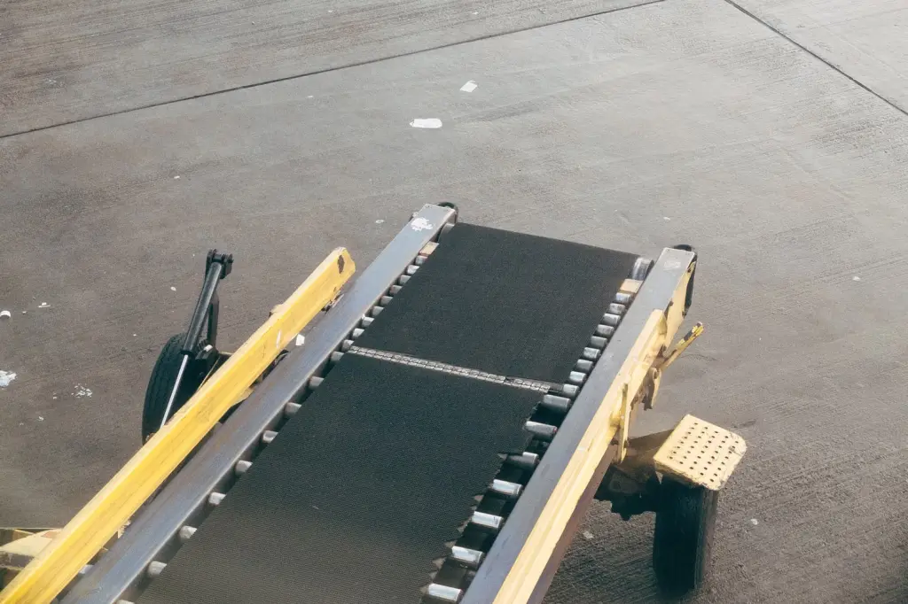
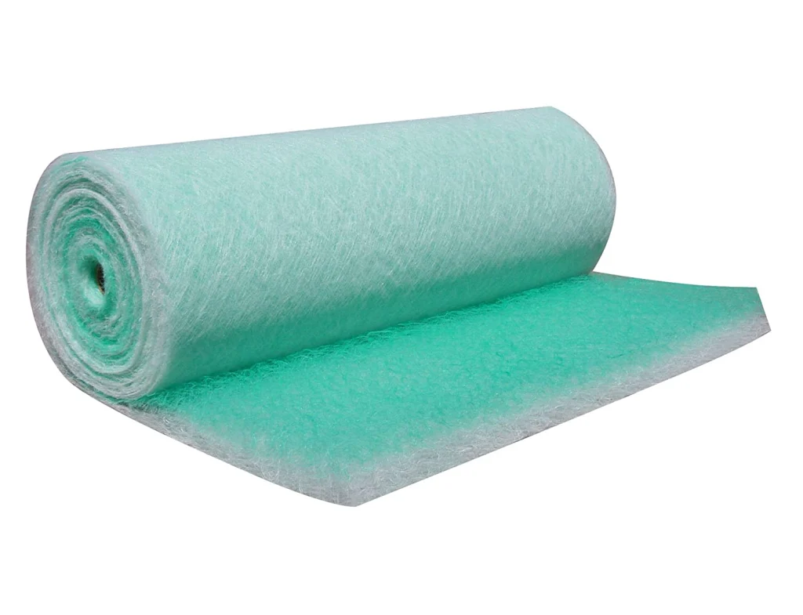
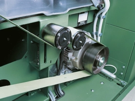

ТЕКА ИНВЕСТ
Голема залиха на траки за секакви намени, погонски ремени и филтери во Македонија
За Нас
Транспортни траки

- Траки за прехранбена индустрија
- Траки за транспорт разни предмети
- Траки за теретани
- Види повеќе...
Филтери

- Просторна филтрација
- Автолакирници
- Индустриско отпрашување
- Види повеќе...
Погонски ремени

- Рамни
- Гума-пластика-гума
- Разни влечни сили
- Види повеќе...
Зошто да нарачате од нас?
- Испорака за 1 ден при итност. Редовна испорака до 7 дена.
- Голема залиха и голем избор од 20-тина разни типови на траки за разни намени.
- Интервенции на терен.
- Искуство од 1991 година.
- 500-1000 нарачки годишно.